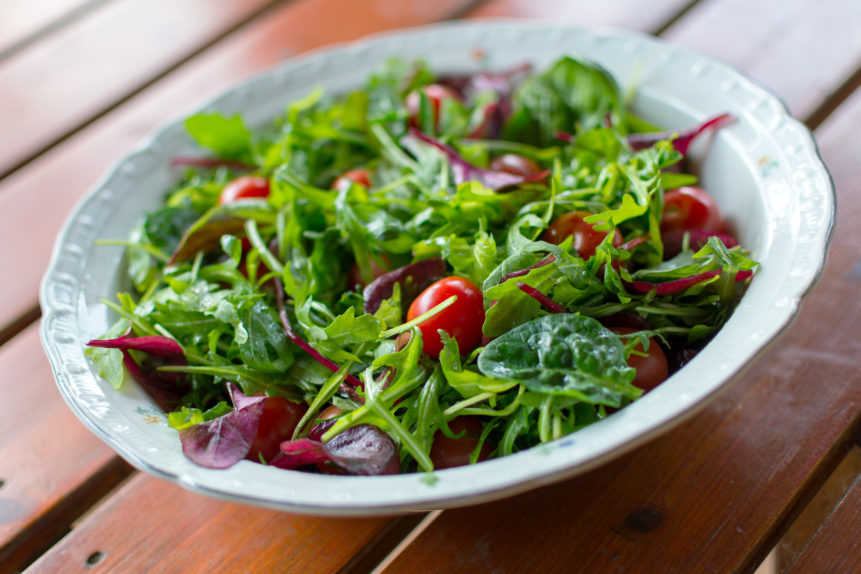

Salad

A refreshing salad to complement any meal.
Ingredients
- Mixed greens (lettuce, spinach, arugula)
- Cucumber
- Cherry tomatoes
- Red onion
- Bell pepper
- Carrots
- Olive oil
- Balsamic vinegar
- Salt and pepper
- Feta cheese (optional)
- Croutons (optional)
Instructions
- Wash and dry the mixed greens thoroughly.
- Chop the cucumber, cherry tomatoes, red onion, bell pepper, and carrots into bite-sized pieces.
- In a large bowl, combine the mixed greens and chopped vegetables.
- Drizzle with olive oil and balsamic vinegar. Season with salt and pepper to taste.
- Toss gently to combine all ingredients.
- If desired, sprinkle feta cheese and croutons on top before serving.
Home